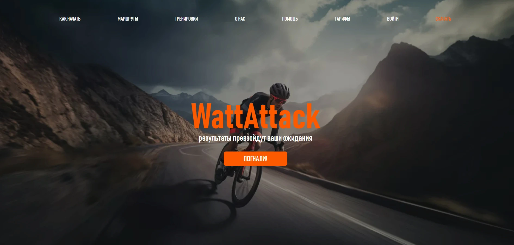

Узнать больше о проекте. Проект напасан с помощью :
PHP framework Symfony, backend lag - PHP 8.1, frontend lang - typescript (Reactjs 18),FC, Hooks(default и Custom), Redux(React-Redux, Redux-thunk), Axios, Formik, React-Router-Dom, CSS-module. Чем занимался на проекте :
От создания проекта и до развертывания на хостинге проектом занимался я один, в паре с тимлидом который является бекенд разработчиком и писал исключительно серверную часть. Вёрстка, адаптив, оптимизация в Google pagespeed, подгонка изображений под webp, покрытие unit-тестами всего business logic layer, разработка уровня data access layer, логика UX. Код можно посмотреть тут.